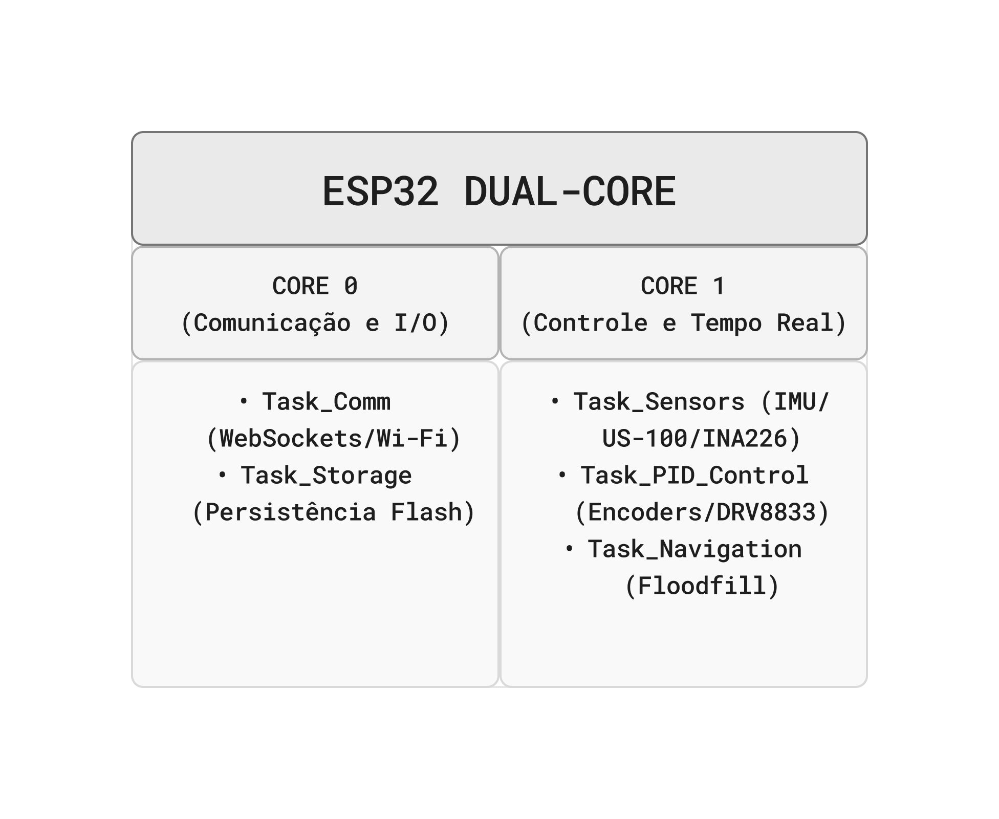

Projeto Conceitual de Software¶
Diagrama de Atividades¶
O diagrama abaixo descreve o fluxo de comportamento funcional do MicroMouse durante uma corrida, desde o início da execução até a chegada ao objetivo, evidenciando os três atores envolvidos (raias/swimlanes): o Robô (firmware embarcado), o Servidor (sistema web de telemetria + banco de dados) e o Usuário (que acompanha a corrida pelo dashboard).

Diagrama de Atividades no Figma¶
Leitura do fluxo:
- Entradas: Leituras dos sensores de distância a cada célula percorrida e calibração inicial do sistema.
- Atividades do Robô: Inicialização do sistema, mapeamento e atualização da localização do robô, decisão do próximo movimento e execução da navegação.
- Ponto de decisão: "Atingiu a saída?" separa o ciclo de navegação e tomada de decisão da etapa de encerramento da corrida.
- Sincronização e Paralelismo: A cada movimento executado, o robô dispara em segundo plano a transmissão de dados de telemetria para a Plataforma Web, mantendo o laço de navegação ativo de forma paralela.
- Atividades da Plataforma Web: Recebimento dos pacotes de telemetria, salvamento dos dados no banco de dados e atualização da interface do dashboard em tempo real.
- Atividades do Usuário: Acompanhamento da corrida ao vivo no dashboard e análise do relatório final de desempenho ao término do percurso.
- Saídas: Dados da corrida armazenados localmente no MicroMouse, histórico completo persistido no banco de dados e relatório exibido no dashboard web.
Itens fundamentais:
- Diagrama Atividades UML: descrever e explicar o fluxo do comportamento funcional do produto proposto, evidenciando, de forma clara e estruturada, como as atividades são executadas, em que ordem e sob quais condições. Esse diagrama permite compreender o funcionamento dinâmico do sistema, destacando:
- os principais atores (usuários ou sistemas externos) envolvidos no processo;
- as atividades de negócio realizadas por cada ator ou pelo próprio sistema;
- os insumos (entradas) necessários para a execução das atividades;
- os resultados (saídas) gerados ao longo do fluxo;
- os pontos de decisão, paralelismo e sincronização das atividades;
- Entre as notações mais relevantes, destacam-se o estado inicial e final, atividades, nós de decisão e junção, barras de bifurcação, Raias (swimlanes) e Fluxos de controle.
- Backlog do Produto
- Detalhar os requisitos funcionais (RF) com a técnica de documentação e especificação de história de usuário (HU);
- Protótipos de interface gráfica do software em alta fidelidade.
- Todas HUs devem conter sua descrição (Eu-Como-Para), critérios de aceitação e protótipos de interface, documentadas no github.
- Exporte as informações do Backlog do Produto no GitHub Projects em formato CSV, e renderize em Markdown no formato a seguir:
Requisitos Funcionais¶
RF01/Épico-01: Mapear Labirinto¶
| ID (Link Github Projects) | Título | Prioridade |
|---|---|---|
| HU-00 | Construção contínua do mapa interno do labirinto | Must |
HU-00 — Construção contínua do mapa interno do labirinto¶
Eu, como Operador da Equipe, gostaria que o MicroMouse construa e atualize continuamente um mapa interno do labirinto à medida que se desloca, para que ele identifique caminhos livres, paredes e becos sem saída de forma autônoma, permitindo a navegação sem intervenção humana.
Critérios de aceitação: - Para cada célula visitada, o robô registra quais das 4 paredes foram identificadas (com base no RF04). - O mapa interno é atualizado célula a célula, em tempo real, sem necessidade de reiniciar a exploração. - Ao final do trajeto (com sucesso ou não), o mapa interno reflete corretamente a estrutura de paredes percebida pelos sensores até aquele ponto. - O mapa interno pode ser recuperado/consultado pelo sistema para ser transmitido e exibido no sistema web (RF02/RF06).
Protótipo de interface: Não se aplica. É processamento interno embarcado no MicroMouse, sem tela própria — o resultado (o mapa) é exibido pela interface descrita em RF02.
RF02/Épico-02: Exibir dados do Labirinto¶
| ID (Link Github Projects) | Título | Prioridade |
|---|---|---|
| HU-01 | Visualização do mapa do labirinto em tempo real | Should |
| HU-02 | Consulta histórica do mapa por labirinto ou por todos | Should |
HU-01 — Visualização do mapa do labirinto em tempo real¶
Eu, como Operador da Equipe, gostaria de visualizar, em tempo real no sistema web, o mapa do labirinto sendo construído pelo MicroMouse durante a corrida, para que eu acompanhe visualmente o progresso da navegação e identifique rapidamente se o robô está com dificuldades.
Critérios de aceitação: - A tela exibe uma grade correspondente ao tipo de labirinto em disputa (4x4, 8x4 ou 12x4 células). - Paredes detectadas pelo robô aparecem no mapa conforme são identificadas, com latência máxima aceitável definida pela equipe (ex.: até 2 segundos). - A célula de início (canto de partida) e a célula de objetivo (canto diametralmente oposto) são destacadas visualmente e de forma diferenciada. - O trajeto já percorrido pelo robô é sobreposto ao mapa. - A tela indica claramente quando não há dados/conexão disponível (robô ainda não iniciou ou comunicação perdida).
Protótipo de interface (descrição textual): Tela "Mapa do Labirinto", componente central do sistema web. Cabeçalho com o tipo de labirinto ativo (ex.: "Labirinto 8x4") e um indicador de status "🟢 Ao vivo" / "🔴 Sem conexão". Corpo principal com a grade do labirinto renderizada dinamicamente célula a célula (linhas grossas simulando paredes brancas com topo vermelho, como no labirinto físico; piso escuro). A célula inicial é destacada em verde-claro e a célula de objetivo em rosa/vermelho-claro, reproduzindo as cores usadas nos slides do contrato. O trajeto percorrido é desenhado como uma linha pontilhada ou sequência de pontos sobre as células já visitadas. Uma legenda lateral explica as cores e símbolos usados.
HU-02 — Consulta histórica do mapa por labirinto ou por todos¶
Eu, como Integrante da Equipe (Analista), gostaria de consultar, após a conclusão de uma corrida, os dados estruturais e o mapa final de um labirinto específico ou de todos os labirintos já percorridos, para que eu possa analisar o desempenho de navegação do robô em execuções passadas.
Critérios de aceitação: - A tela lista as execuções/labirintos já persistidos no banco de dados (RNF01). - É possível filtrar/selecionar um labirinto específico (4x4, 8x4 ou 12x4) ou optar por visualizar todos. - O mapa final exibido corresponde exatamente aos dados persistidos ao final daquela execução. - Caso não existam execuções registradas, a tela informa isso de forma clara (estado vazio).
Protótipo de interface (descrição textual): Tela "Histórico de Labirintos". No topo, um seletor (abas ou dropdown) com as opções "Todos / 4x4 / 8x4 / 12x4". Abaixo, uma lista/tabela de execuções, cada linha com data/hora, tipo de labirinto e resultado resumido (concluído/não concluído). Ao clicar em uma execução, abre o mapa final daquela corrida reutilizando o mesmo componente visual de grade da HU-01, porém em modo estático (sem indicador "ao vivo").
RF03/Épico-03: Exibir dados do MicroMouse¶
| ID (Link Github Projects) | Título | Prioridade |
|---|---|---|
| HU-03 | Painel de status do MicroMouse em tempo real | Should |
| HU-04 | Consulta histórica de desempenho do MicroMouse | Should |
HU-03 — Painel de status do MicroMouse em tempo real¶
Eu, como Operador da Equipe, gostaria de visualizar, em tempo real no sistema web, os dados de status do MicroMouse (posição atual, velocidade, nível de bateria e tempo decorrido) durante a corrida, para que eu acompanhe o comportamento do robô e identifique rapidamente eventuais falhas ou mau funcionamento.
Critérios de aceitação: - O painel atualiza os valores em um intervalo curto e definido pela equipe (ex.: a cada 500 ms – 1 s). - São exibidos, no mínimo: posição atual (linha/coluna), velocidade instantânea e/ou média, percentual de bateria restante e tempo decorrido desde o início da corrida. - Há indicação visual clara (ex.: alerta) em caso de perda de comunicação com o robô (RF06). - Há indicação visual quando a bateria atinge níveis considerados críticos.
Protótipo de interface (descrição textual): Painel "Status do MicroMouse", em formato de dashboard com cartões (cards): (1) indicador circular/barra de bateria (%), com cor mudando de verde → amarelo → vermelho conforme o nível cai; (2) velocímetro ou barra de velocidade atual; (3) cronômetro digital com o tempo decorrido; (4) indicador textual da posição atual (ex.: "C3"); (5) badge de status de conexão ("Conectado" / "Sem sinal"). O painel fica normalmente posicionado ao lado do mapa (HU-01), formando a tela principal de acompanhamento da corrida.
HU-04 — Consulta histórica de desempenho do MicroMouse¶
Eu, como Integrante da Equipe (Analista), gostaria de consultar o histórico de desempenho do MicroMouse (velocidade média, tempo de conclusão, consumo de bateria e se o desafio foi cumprido) de execuções passadas, filtrando por labirinto específico ou por todos, para que eu possa analisar a evolução do robô entre tentativas e embasar ajustes técnicos.
Critérios de aceitação: - A listagem exibe, por execução: tipo de labirinto, tempo de conclusão, velocidade média, consumo de bateria e status "Desafio Cumprido" (Sim/Não). - É possível filtrar por labirinto específico (4x4, 8x4, 12x4) ou visualizar todos. - Os dados exibidos correspondem exatamente aos dados persistidos no banco de dados (RNF01).
Protótipo de interface (descrição textual): Tela "Histórico do MicroMouse", com o mesmo filtro superior da HU-02 ("Todos / 4x4 / 8x4 / 12x4"). Corpo principal em formato de tabela, com colunas: Data, Labirinto, Tempo de Conclusão, Velocidade Média, Bateria Consumida e Desafio Cumprido (ícone ✔/✘). Pode compartilhar a mesma tela de HU-02 (uma única tela "Histórico", com abas "Labirinto" e "MicroMouse") — decisão de composição de tela a ser validada na etapa de design.
RF04/Épico-04: Identificar Paredes¶
| ID (Link Github Projects) | Título | Prioridade |
|---|---|---|
| HU-05 | Detecção de paredes adjacentes por sensores | Must |
HU-05 — Detecção de paredes adjacentes por sensores¶
Eu, como Operador da Equipe, gostaria que o MicroMouse detecte, por meio de seus sensores, a presença e a proximidade de paredes adjacentes (frontal, lateral esquerda e lateral direita) em cada célula, para que ele tome decisões seguras de navegação e evite colisões com a estrutura do labirinto.
Nota: comportamento autônomo do robô.
Critérios de aceitação: - Os sensores identificam corretamente presença/ausência de parede em cada uma das direções adjacentes, considerando a dimensão da célula (18 cm de lado, incluindo espessura das paredes). - A detecção ocorre antes de o robô decidir seu próximo movimento (giro ou avanço). - A taxa de falsos positivos/negativos não impede a conclusão do trajeto dentro do limite de 3 tentativas por labirinto.
Protótipo de interface: Não se aplica. É funcionalidade de sensoriamento embarcado, sem interface própria — seu resultado é refletido no mapa exibido em RF02.
RF05/Épico-05: Monitorar Localização¶
| ID (Link Github Projects) | Título | Prioridade |
|---|---|---|
| HU-06 | Rastreamento da posição do robô na grade | Must |
HU-06 — Rastreamento da posição do robô na grade¶
Eu, como Operador da Equipe, gostaria que o MicroMouse acompanhe e atualize sua posição exata (linha/coluna) dentro da grade do labirinto a cada movimento realizado, para que o algoritmo de navegação (RF10) e os dados exibidos em tempo real (RF03) estejam sempre corretos.
Nota: comportamento autônomo do robô.
Critérios de aceitação: - Após cada movimento (avanço ou giro), a posição interna do robô é recalculada corretamente. - A posição atual pode ser consultada e transmitida para exibição em tempo real (RF06/RF03). - O robô nunca perde a referência da célula em que está durante uma tentativa válida (sem colisão/malfuncionamento).
Protótipo de interface: Não se aplica. É processamento interno embarcado, sem tela própria.
RF06/Épico-06: Transmitir dados¶
| ID (Link Github Projects) | Título | Prioridade |
|---|---|---|
| HU-07 | Envio contínuo de dados do robô para a central de controle | Should |
HU-07 — Envio contínuo de dados do robô para a central de controle¶
Eu, como Operador da Equipe, gostaria que o MicroMouse envie continuamente, durante a corrida, os dados coletados pelos sensores e pelo sistema de bordo para a central de controle (sistema web), para que eu consiga acompanhar a corrida em tempo real pelas telas de RF02 e RF03.
Critérios de aceitação: - A comunicação entre o robô e o sistema web é estabelecida antes do início da corrida (handshake/conexão). - Os dados são enviados em um intervalo regular e definido pela equipe. - O sistema web sinaliza claramente perda de conexão/timeout de comunicação (consumido pela HU-03). - Em caso de falha temporária de transmissão, os dados continuam sendo armazenados localmente (RF09) até a reconexão.
Protótipo de interface: Não se aplica. É requisito de infraestrutura de comunicação (protocolo/canal robô ↔ sistema web); seu efeito é percebido indiretamente nas telas de RF02 e RF03.
RF07/Épico-07: Fazer giro completo¶
| ID (Link Github Projects) | Título | Prioridade |
|---|---|---|
| HU-08 | Execução de giro de 180° para retorno | Must |
HU-08 — Execução de giro de 180° para retorno¶
Eu, como Operador da Equipe, gostaria que o MicroMouse execute um giro controlado de 180° em torno do próprio eixo ao identificar um beco sem saída ou necessidade de retorno, para que ele continue a exploração do labirinto sem ficar preso, sem intervenção humana.
Nota: comportamento autônomo do robô.
Critérios de aceitação: - Ao concluir o giro, a orientação do robô é invertida corretamente (180°), sem deslocamento para outra célula. - O movimento não provoca colisão com paredes, respeitando o controle de velocidade/frenagem exigido em RNF05. - O giro é acionado apenas quando necessário pela lógica de navegação (RF10), evitando giros desnecessários.
Protótipo de interface: Não se aplica.
RF08/Épico-08: Andar para frente¶
| ID (Link Github Projects) | Título | Prioridade |
|---|---|---|
| HU-09 | Deslocamento linear entre células adjacentes | Must |
HU-09 — Deslocamento linear entre células adjacentes¶
Eu, como Operador da Equipe, gostaria que o MicroMouse se desloque linearmente da célula atual para a célula adjacente à frente, de forma precisa e sem colisões, para que ele avance pelo labirinto em direção ao objetivo.
Nota: comportamento autônomo do robô.
Critérios de aceitação: - O deslocamento cobre exatamente a distância de uma célula (18 cm), respeitando a dimensão mecânica compatível (RNF04). - A velocidade e a frenagem aplicadas respeitam o RNF05 (sem causar dano à estrutura do labirinto ou ao robô). - O robô finaliza o movimento corretamente alinhado na célula seguinte, pronto para a próxima decisão de navegação.
Protótipo de interface: Não se aplica.
RF09/Épico-09: Armazenar dados¶
| ID (Link Github Projects) | Título | Prioridade |
|---|---|---|
| HU-10 | Registro local de dados operacionais a bordo | Should |
HU-10 — Registro local de dados operacionais a bordo¶
Eu, como Operador da Equipe, gostaria que o MicroMouse registre e salve localmente (a bordo) as informações operacionais coletadas durante a navegação, para que esses dados não se percam em caso de falha de comunicação e possam ser posteriormente sincronizados com a central de controle.
Critérios de aceitação: - Os dados operacionais (posição, sensores, métricas) são gravados em memória não volátil a bordo durante toda a execução. - Em caso de queda de comunicação com o sistema web, o registro local continua ocorrendo normalmente. - Os dados armazenados localmente podem ser recuperados e reenviados/sincronizados após o reestabelecimento da comunicação.
Protótipo de interface: Não se aplica. É armazenamento embarcado, sem interface própria — distinto da persistência central em banco de dados (RNF01), que é responsabilidade do sistema web.
RF10/Épico-10: Navegar labirinto¶
| ID (Link Github Projects) | Título | Prioridade |
|---|---|---|
| HU-11 | Resolução autônoma do labirinto até o objetivo | Must |
HU-11 — Resolução autônoma do labirinto até o objetivo¶
Eu, como Operador da Equipe, gostaria que o MicroMouse execute autonomamente algoritmos de busca e tomada de decisão para percorrer o labirinto, desde o ponto de partida até a área de objetivo, sem intervenção humana, para que a equipe cumpra o desafio da competição dentro das regras do contrato.
Nota: Este é o épico mais amplo, que orquestra RF04, RF05, RF07, RF08 e RF01.
Critérios de aceitação: - O robô inicia sempre no beco sem saída do canto de partida e para ao alcançar a célula de objetivo (canto diametralmente oposto). - Nenhuma intervenção humana ocorre durante a resolução, exceto em caso de malfuncionamento ou colisão (conforme permitido pelo contrato). - O robô detecta corretamente quando alcançou a área de objetivo e encerra a tentativa. - O algoritmo é capaz de resolver os três tipos de labirinto da competição (4x4, 8x4 e 12x4) dentro do limite de até 3 tentativas e 10 minutos por desafio. - O código e a memória sobre o labirinto não são alterados manualmente durante a resolução do trajeto (regra do contrato).
Protótipo de interface: Não se aplica.
RF11/Épico-11: Realizar telemetria¶
| ID (Link Github Projects) | Título | Prioridade |
|---|---|---|
| HU-12 | Coleta e transmissão contínua de métricas de operação | Should |
HU-12 — Coleta e transmissão contínua de métricas de operação¶
Eu, como Operador da Equipe, gostaria que o MicroMouse colete e transmita continuamente métricas de operação (velocidade, tempo decorrido, consumo de bateria e status do desafio) para a central de controle, para que seja possível o acompanhamento contínuo do desempenho do robô durante a corrida.
Critérios de aceitação: - As métricas coletadas incluem, no mínimo: velocidade instantânea/média, tempo decorrido, percentual de bateria consumida e status da tentativa (em andamento / concluída / falha). - As métricas são transmitidas junto com os demais dados de RF06, em intervalo regular definido pela equipe. - As métricas coletadas ficam disponíveis para exibição em tempo real nas telas de RF03 (HU-03) e, após a corrida, no histórico (HU-04).
Protótipo de interface: Não se aplica. É o mecanismo de coleta/transmissão de métricas; a visualização propriamente dita ocorre via RF03.
2. Requisitos Não-Funcionais¶
| ID (Link Github Projects) | Título | Prioridade | Rastreabilidade |
|---|---|---|---|
| RNF-01 | Persistência de Dados Operacionais | Should | RF09/HU-10; RF02/HU-02; RF03/HU-04 |
| RNF-02 | Autonomia da Bateria (3 trajetos / 30 min) | Must | RF10/HU-11; RF03/HU-03 |
| RNF-03 | Fonte de Energia Recarregável | Should | RF10/HU-11 (enabler geral, sem tela própria) |
| RNF-04 | Compatibilidade de Dimensão Mecânica (célula 18 cm) | Must | RF08/HU-09; RF07/HU-08 |
| RNF-05 | Tolerância a Colisão e Controle de Impacto | Must | RF07/HU-08; RF08/HU-09 |
| RNF-06 | Integridade Estrutural | Must | RF07/HU-08; RF08/HU-09; RF10/HU-11 |
Arquitetura de Software: Solução MicroMouse¶
Este documento apresenta a especificação arquitetural do sistema embarcado e da central de monitoramento para o robô MicroMouse, estruturado de acordo com o modelo de Visões Arquiteturais (4+1) do Processo Unificado (UP). Em conformidade com as diretrizes do projeto, a tradicional Visão de Casos de Uso foi substituída pela Visão de Dados.
1. Visão Geral e Propósito do Software¶
1.1 Propósito do Software¶
O software possui o papel de atuar como o sistema de controle autônomo e telemetria de bordo do robô MicroMouse. Ele é responsável por:
-
Processar sinais de sensores em tempo real para identificação de paredes, localização e orientação.
-
Executar algoritmos de navegação e mapeamento dinâmico do labirinto.
-
Controlar os atuadores (motores via controle PID e odometria) para movimentação precisa.
-
Persistir e transmitir dados de telemetria, logs de execução e a topologia do labirinto para uma central de controle via Wi-Fi em tempo real.
2. Visão Lógica¶
A Visão Lógica descreve a organização conceitual e a estruturação das classes e módulos do sistema.
2.1 Padrões Arquiteturais Adotados e Justificativa¶
- Firmware Embarcado (Robô): Arquitetura em Camadas (Layered Architecture) orientada a Eventos/Tarefas.
-
Justificativa: O software de bordo lida diretamente com o hardware do microcontrolador ESP32. A divisão em camadas garante o desacoplamento entre os drivers de baixo nível (I2C, PWM, GPIO), a lógica de controle PID/Navegação e a camada de comunicação de alto nível.
-
Dashboard (Central de Controle): Padrão MVC (Model-View-Controller).
- Justificativa: Permite a separação entre a interface visual que renderiza o labirinto e métricas do robô (View), os serviços que processam as mensagens WebSockets recebidas (Controller) e os modelos de dados da sessão e estado (Model).
2.2 Divisão em Módulos do Sistema¶
- Módulo HAL / Drivers de Hardware (Baixo Nível):
-
Driver IMU (MPU6500): Leitura do giroscópio e acelerômetro via I2C para estimativa de orientação.
-
Driver Ultrassônico (US-100): Leitura contínua da distância de paredes via UART/GPIO.
-
Driver Ponte H (DRV8833): Controle PWM para acionamento dos motores N20.
-
Driver de Odometria (Encoders N20): Contagem de pulsos por interrupção para cálculo de deslocamento.
-
Driver de Potência (INA226): Monitoramento de tensão e corrente da bateria via I2C.
-
Módulo de Controle e Navegação (Médio Nível):
-
Malha de Controle PID: Mantém o robô centralizado e estabilizado durante a locomoção.
-
Mapeador e Buscador (Floodfill): Atualiza a matriz do labirinto e calcula as ações de rotação e avanço.
-
Módulo de Comunicação e Armazenamento (Alto Nível):
-
Gerenciador NVS/Flash: Armazena configurações e histórico de logs localmente.
-
Servidor WebSockets/Wi-Fi: Transmite a telemetria do robô e atualizações do mapa.
3. Visão de Processos¶
A Visão de Processos trata da concorrência, tempo real e distribuição do processamento entre as tarefas do sistema.
O microcontrolador ESP32 conta com dois núcleos de processamento (Core 0 e Core 1) e executa o sistema operacional de tempo real FreeRTOS. As tarefas (Tasks) são distribuídas entre os núcleos para garantir resposta imediata aos sensores sem bloquear as rotinas de comunicação:

- Processo 1:
Task_Sensors(Periódico - 10ms | Prioridade Alta): -
Executa a amostragem do giroscópio MPU6500 e a leitura dos 4 sensores US-100 para identificação imediata de obstáculos/paredes.
-
Processo 2:
Task_PID_Control(Periódico - 5ms | Prioridade Máxima): -
Processa interrupções dos leitores de encoder dos motores N20, calcula os erros de trajetória e atualiza o ciclo de trabalho PWM da ponte H DRV8833.
-
Processo 3:
Task_Navigation(Baseado em Eventos | Prioridade Média): -
Disparada quando o robô alcança o centro de uma célula. Executa a lógica de atualização da grade de navegação e decide a próxima direção.
-
Processo 4:
Task_Comm(Assíncrono | Prioridade Baixa): - Formata os dados no formato JSON e envia pacotes de telemetria e o estado do labirinto para a central de controle via WebSockets.
4. Visão de Implementação¶
A Visão de Implementação especifica as tecnologias, linguagens, frameworks e bibliotecas escolhidas para a solução.
4.1 Tecnologias Adotadas¶
| Camada | Tecnologia / Linguagem | Frameworks e Bibliotecas | Justificativa |
|---|---|---|---|
| Firmware (Embarcado) | C++ / C |
FreeRTOS, Arduino ESP32 Core, Wire.h (I2C), ESPAsyncWebServer, ArduinoJson |
Permite controle rigoroso de baixo nível, acesso direto aos registradores e periféricos da ESP32 com altíssimo desempenho de tempo real. |
| Dashbord (Backend/Server) | TypeScript / Node.js | Express.js, ws (WebSockets), TypeORM / Prisma |
Plataforma leve e eficiente em I/O assíncrono para manipulação da transmissão contínua de dados de telemetria. |
| Dashbord (Frontend/Dashboard) | TypeScript / JavaScript | React.js, TailwindCSS, Chart.js, HTML5 Canvas API | Permite renderização fluida da grade do labirinto em tempo real e atualização gráfica das métricas do robô. |
5. Visão de Implantação¶
A Visão de Implantação descreve a arquitetura física e a topologia de hardware da solução.

Componentes de Hardware Utilizados e Conexões:¶
-
ESP32 DevKit 30 Pinos: Unidade Central de Processamento.
-
Ponte H DRV8833: Conectada às saídas PWM da ESP32 para controle bidirecional dos Motores N20-6V.
-
2x Motores N20 com Encoders: Conectados a pino de interrupção da ESP32 para feedback de malha fechada.
-
4x Sensores Ultrassônicos US-100: Dispostos nas posições frontal, traseira, esquerda e direita para mapeamento de paredes.
-
IMU MPU6500: Conectado via barramento I2C para estimativa de ângulo e giros precisos de 180°.
-
Sensor INA226: Conectado via I2C para leitura de corrente e tensão da bateria.
-
Regulador Buck MP1584: Regula a tensão de alimentação dos módulos lógicos.
6. Visão de Dados¶
A Visão de Dados descreve a modelagem e a estrutura de persistência das informações manipuladas e gravadas pelo sistema.
6.1 Escolha da Tecnologia de Banco de Dados: Relacional (SQLite / PostgreSQL)¶
-
Justificativa: Os dados manipulados pelo sistema possuem um alto grau de estruturação e esquemas rígidos (ex: coordenadas $X,Y$ fixas em uma matriz, leituras periódicas de telemetria vinculadas a uma sessão de execução e registros tabulares de erros).
-
No Dashbord, adota-se um Banco de Dados Relacional (SQLite para execução local simples ou PostgreSQL para diagnósticos avançados).
-
No Robô (ESP32), utiliza-se a memória Flash interna (via biblioteca
Preferencesou sistema de arquivosLittleFS) configurada estruturalmente em formato relacional/tabelar binário para armazenamento offline caso ocorra perda do link Wi-Fi.
6.2 Modelo Entidade-Relacionamento (MER)¶
Entidades e Atributos:¶
-
SESSAO_NAVEGACAO:
-
id_sessao(PK, Inteiro): Identificador único do percurso. -
data_inicio(DateTime): Registro do momento do início da corrida. -
status_conclusao(Texto): Status do percurso (Em andamento, Concluído, Interrompido por Falha). -
tempo_total_segundos(Float): Tempo transcorrido até o reconhecimento da linha de chegada. -
CELULA_LABIRINTO:
-
id_celula(PK, Inteiro): Identificador da célula. -
id_sessao(FK, Inteiro): Referência à sessão atual. -
pos_x(Inteiro): Coordenada $X$ da célula na grade do labirinto. -
pos_y(Inteiro): Coordenada $Y$ da célula na grade do labirinto. -
parede_norte(Booleano): Presença de parede ao Norte. -
parede_sul(Booleano): Presença de parede ao Sul. -
parede_leste(Booleano): Presença de parede ao Leste. -
parede_oeste(Booleano): Presença de parede ao Oeste. -
visitada(Booleano): Flag indicando se o robô passou pela célula. -
REGISTRO_TELEMETRIA:
-
id_telemetria(PK, BigInt): Identificador único da amostra. -
id_sessao(FK, Inteiro): Sessão associada. -
timestamp_ms(BigInt): Milissegundos transcorridos desde o boot. -
tensao_bateria(Float): Leitura do sensor INA226 em Volts. -
corrente_bateria(Float): Leitura do sensor INA226 em Amperes. -
velocidade_esq(Float): Velocidade calculada do motor esquerdo em mm/s. -
velocidade_dir(Float): Velocidade calculada do motor direito em mm/s. -
angulo_orientacao(Float): Leitura de orientação Yaw da IMU MPU6500. -
LOG_EVENTO:
-
id_log(PK, Inteiro): Identificador do registro. -
id_sessao(FK, Inteiro): Sessão associada. -
timestamp_ms(BigInt): Horário do evento. -
tipo_evento(Texto): Categoria (INFO, WARN, ERROR, SUCCESS). -
descricao(Texto): Detalhamento do evento (ex: "Linha de Chegada Reconhecida", "Motores Interrompidos").
Relacionamentos e Cardinalidades:¶
-
Uma SESSAO_NAVEGACAO possui $1:N$ CELULA_LABIRINTO (Uma sessão gera o mapeamento de várias células do labirinto).
-
Uma SESSAO_NAVEGACAO possui $1:N$ REGISTRO_TELEMETRIA (Uma sessão coleta continuadamente múltiplos pacotes de telemetria).
-
Uma SESSAO_NAVEGACAO possui $1:N$ LOG_EVENTO (Uma sessão registra diversos logs operacionais).
6.3 Diagrama Entidade-Relacionamento (DER)¶
erDiagram
SESSAO_NAVEGACAO ||--|{ CELULA_LABIRINTO : "mapeia"
SESSAO_NAVEGACAO ||--|{ REGISTRO_TELEMETRIA : "registra"
SESSAO_NAVEGACAO ||--|{ LOG_EVENTO : "gera"
SESSAO_NAVEGACAO {
int id_sessao PK
datetime data_inicio
string status_conclusao
float tempo_total_segundos
}
CELULA_LABIRINTO {
int id_celula PK
int id_sessao FK
int pos_x
int pos_y
boolean parede_norte
boolean parede_sul
boolean parede_leste
boolean parede_oeste
boolean visitada
}
REGISTRO_TELEMETRIA {
bigint id_telemetria PK
int id_sessao FK
bigint timestamp_ms
float tensao_bateria
float corrente_bateria
float velocidade_esq
float velocidade_dir
float angulo_orientacao
}
LOG_EVENTO {
int id_log PK
int id_sessao FK
bigint timestamp_ms
string tipo_evento
string descricao
}
- Roteiro de testes funcionais:
- Código do caso de teste;
- Nome do caso de teste;
- Rastreabilidade: Link do(a) RF/HU associado(a);
- Objetivo do caso de teste;
- Pré-condições do sistema para o teste ser realizado, quando se aplicar;
- Descrição dos procedimentos a serem executados para o teste;
- Resultado esperado para o teste ser aprovado (pós-condição após realizado o teste);